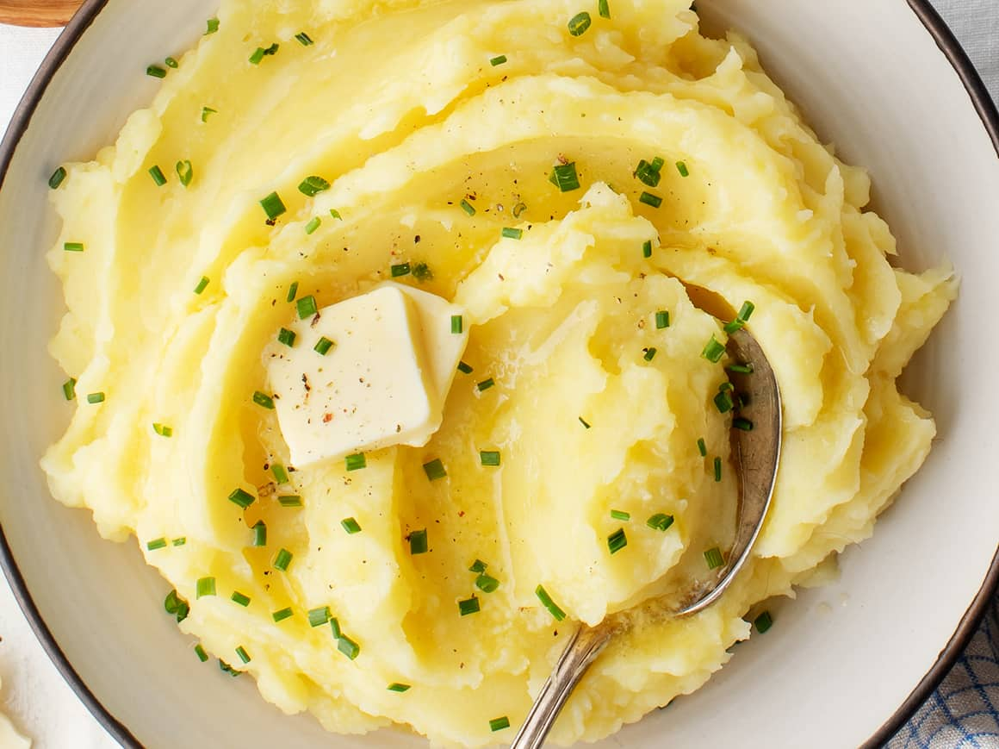

Instant Pot Mashed Potatoes

Description:
Thanksgiving is a time for celebration and feasts so what better way to enjoy dinner than with a fresh hot serving of mashed potatoes?
Instant pot mashed potatoes are one of the side characters that are integral to the plot of a tv show or movie. In this case, it's a very important side dish that goes well with anything.
With their fluffy, rich creamy taste, this dish is guaranteed to leave your stomach fully satisfied. And they're really easy to make, especially this recipe! All you need is your Instant Pot and these things:
Ingredients:
- 5 lbs russet potatoes peeled
- 3 cups chicken
- 3 cups water
- 2 tsp kosher
- 1/3 cup sour cream
- 1/2 cup of unsalted butter
- 1/3 cup of heavy cream
- 1/2 tsp of black pepper
- chopped fresh chives for garnish
- additional pats of butter for garnish
Steps:
- Quarter potatoes and add to pot. Cover with chicken broth and water.
- Add 1 tsp of the salt and secure the lid to sealing.
- Select manual/pressure cook and use the +/- buttons to set time for 12 minutes.
- Once cooking is finished, perform quick release by setting valve to "venting."
- Drain potatoes and return to inner pot.
- Add remaining 1 tsp of salt, black pepper, sour cream, butter, and heavy cream.
- Use potato masher/hand mixer to mash until potatoes reach desired consistency.
- Serve with additional pats of butter and black pepper topped along with sprinkled chives.